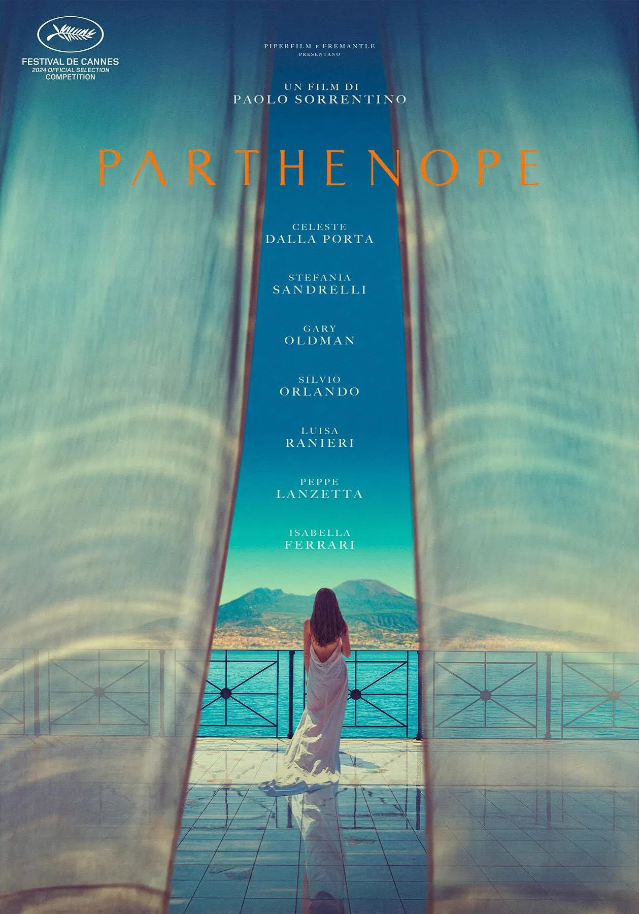
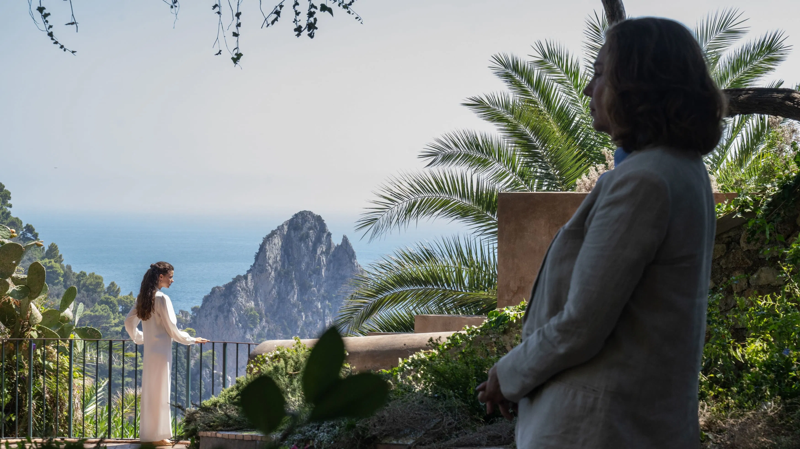

"And as the summer fades away, nothing gold can stay."
Naples. The sea at dusk that carries both salt and myth of a siren whose voice brought sailors to their doom and who threw herself into the sea after Ulysses resisted her temptation of beauty. It is here that Paolo Sorrentino sets his Parthenope, a film that feels like a tide – arriving, departing, returning again, never to be held.
Parthenope. What a beautiful name. She is a siren of Naples, who moves through the film as a vision of beauty that both blesses and burdens, a beauty never still, always slipping. Watching her is like watching a summer sunset: shining precisely because you know it is already vanishing. And while you look at it, while you feel the disappearance of it, comes the question that was whispered through the film’s imagery: what does it mean to witness beauty that cannot last?
Parthenope’s beauty is destiny, it is not ornamental or decorative. People who encounter her are moved, unsettled, or left incomplete. Sorrentino presents her beauty as something that divides between the one who possesses it and the ones who behold it. Her presence becomes a mirror for others: men ache her touch, glaze; women admire or resent her beauty, and the city of Naples bends around her. Yet Parthenope does not wield this power consciously, as she seems almost unaware of its weight and surprised by how beauty isolates her. What could have been a blessing, becomes a wound – a distance between her and the rest of the world.
This is where Sorrentino’s vision aches the most: beauty fades because time refuses to let it remain untouched. Naples, too, shares this wound. A city radiant and crumbling at once, where the sea offers endless renewals but the stones still bear centuries of decay. In Parthenope, we see Naples personified – dazzling, desired but always out of reach, always fading before our eyes.
If beauty is the wound, then time is the salt. Parthenope cannot escape the inevitable fading of what once defined her. What Sorrentino captures so painfully is not only the decline of youth, but how memory turns that decline into myth.
The sirens of Naples – creatures half-woman, half-bird who once lured sailors to their deaths – were feared not because they existed, but because they lingered in imagination. Parthenope with her beauty is a siren as well: unforgettable, unreachable, and eventually untouchable by those who once adored her. Her beauty becomes memory, and memory, unlike beauty, cannot always fade, it keeps growing even when the body no longer does. It might be Sorrentino’s most devastating suggestion: that beauty does not completely die, it migrates – from skin to recollection, from the immediacy of the gaze to the permanence of longing. Naples itself embodies that paradox: a city caught between ruin and recollection, where every wall is marked by time and yet the sea insists on eternity. Parthenope’s story becomes a story of how time reframes beauty: what was once adored becomes mourned, what was once mourned becomes myth. And myths never age, they only echo in our minds and hearts.
As the summer fades away, nothing gold can stay. Parthenope is the embodiment of that fleeting shimmer we try to hold on onto when we know it will vanish, fade away. Sorrentino asks us to recognize ourselves in her, definitely not pity her, because beauty, whether it belongs to a face, a season, or a city like Naples, does not vanish into nothingness, it dissolves into memory, into story, into myth. Perhaps, that is the mercy of time: what we cannot preserve, we can remember; what we cannot hold, we can narrate. Parthenope, a siren not of the sea, but of memory, calling us back, again and again, to the memory of what cannot stay, and the strange comfort of knowing that it once was. In her we learn that every summer must fade, and that nothing gold can stay, but that is precisely why it glows so brightly while it does.